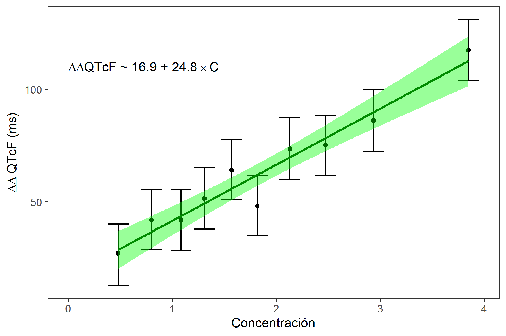

Un modelo es una representación de un sistema diseñada para proveer conocimiento o entendimiento del mismo (1). En la mayoría de los casos resultan en una simplificación de la naturaleza que provee una utilidad en el sentido de hacer predicciones o brindar explicaciones a fenómenos.
La farmacocinética (PK) es la ciencia el comportamiento de las concentraciones en la sangre u otros fluidos, tejidos o partes del organismo de un fármaco frente al tiempo. De esta manera se estudian procesos como absorción, distribución, metabolismo y excreción de fármacos, y otros compuestos xenobióticos. La farmacodinamia (PD) es el estudio de los efectos bioquímicos y fisiológicos de los fármacos en el organismo. Por tal, la misma se encarga de estudiar los mecanismos de acción terapéutica y toxicológica, así como la relación entre concentraciones en el sitio de acción farmacológica y la respuesta observada.
La integración de información PK con información PD ha permitido obtener modelos que permiten conocer el balance entre beneficios y riesgos de un tratamiento farmacológico. De manera que se puede derivar información sobre el manejo que se debe dar al tratamiento como su dosificación. En algunos casos también se puede entender la relación entre componentes de un sistema molecular, celular o fisiológico, y su influencia en la respuesta farmacológica. Un modelo PK-PD muestra el curso temporal de la acción farmacológica y las concentraciones de fármaco en el cuerpo.
Entre los tipos de efectos que se pueden determinar en estudios de farmacodinamia se encuentran:
Los receptores son proteínas que interactuan con ligandos endógenos para generar una respuesta fisiológica que permite regular la función celular. La interacción entre ligando y receptor sigue la ley de acción de masas de acuerdo al modelo Clark. El nivel de respuesta farmacológica (\(R\)) en muchos casos depende de la concentración de un complejo entre el fármaco (ligando) y el receptor.
$$ \left[\text{Fármaco}\right] + \left[\text{Receptor}\right] \rightleftharpoons \left[\text{Complejo Fármaco - Receptor}\right] \rightarrow \text{Respuesta} $$
En este existe un ligando (\(L\)) que interacciona con una diana para formar un complejo entre la diana y ligado (\(LR\)). Este complejo se convierte en una forma activa (\(LR^{\ast}\)) que es responsable por la actividad.
$$ L + R \rightleftharpoons LR \rightleftharpoons LR^{\ast} $$
El modelo cuenta con una serie de supuestos:
En la Figura 1 se muestra una comparación del comportamiento de la respuesta farmacológica respecto a la concentración del ligando de acuerdo con el tipo de agonismo.
Figura 1. Comparación de tipos de agonismo en ligandos con acción farmacológica.
La ecuación de Hill describe la unión de un ligando a una macromolécula.
Ecuación de Hill $$E = \frac{E_{max} \times [L]^\gamma}{EC_{50} + [L]^\gamma} + E_0$$
En donde:
Cuando el fármaco es administrado una o más moléculas del fármaco interactúan con el receptor ocasionando una respuesta farmacológica:
$$ \left[\text{F}\right] + \left[\text{R}\right] \rightleftharpoons \left[\text{FR}\right] $$
A partir de consideraciones de la ley de acción de masas se puede obtener la ecuación de Hill.
$$ E = \frac{E_{max}\left[\text{F}\right]^\gamma}{ EC_{50} +\left[\text{F}\right]^\gamma } $$
La tasa de cambio del complejo fármaco-receptor se puede describir por:
$$ \frac{d\left[\text{FR}\right]}{dt} = \mathrm{k_{on}}·(\mathrm{R_{T}} - \left[\text{FR}\right]) \cdot \left[\text{F}\right] - \mathrm{k_{off}} \cdot \left[\text{FR}\right]$$
Donde \(\mathrm{R_{T}}\) es la densidad de receptores máxima, \(\left[\text{F}\right]\) es la concentración del fármaco en el sitio de acción farmacológica, \(\mathrm{k_{on}}\) es una constante de asociación de segundo orden y \(\mathrm{k_{off}}\) es una constante de disociación de primer orden y \(\mathrm{R_{T}} - \left[\text{FR}\right]\) representa la cantidad de receptores libres.
En condiciones de equilibrio donde no hay formación o disociación neta de complejos \( {d\left[\text{FR}\right]}/{dt} = 0 \), la ecuación se convierte en:
$$ \mathrm{k_{on}} \cdot (\mathrm{R_{T}} - \left[\text{FR}\right]) \cdot \left[\text{F}\right] = \mathrm{k_{off}} \cdot \left[\text{FR}\right]$$
Si se esta se organiza se tienen los siguientes resultados:
$$ \mathrm{k_{on}} \cdot \mathrm{R_{T}} \cdot \left[\text{F}\right] = \left[\text{FR}\right] \cdot (\mathrm{k_{off}} + \mathrm{k_{on}} \left[\text{F}\right]) $$
$$ \left[\text{FR}\right] = \frac{\mathrm{k_{on}} \cdot \mathrm{R_{T}} \cdot \left[\text{F}\right]}{\mathrm{k_{off}} + \mathrm{k_{on}} \left[\text{F}\right]} $$
$$ \left[\text{FR}\right] = \frac{ \mathrm{R_{T}} \cdot \left[\text{F}\right]}{\dfrac{\mathrm{k_{off}}}{\mathrm{k_{on}}} + \left[\text{F}\right]} = \frac{ \mathrm{R_{T}} \cdot \left[\text{F}\right]}{\mathrm{k_{D}} + \left[\text{F}\right]} $$
Donde \(\mathrm{k_{D}}\) es una constante de disociación de equilibrio (\( {\mathrm{k_{off}}}/{\mathrm{k_{on}}} \)). Si se asume que la magnitud del efecto (\(E\)) es proporcional a la concentración del complejo \( \left[\text{FR}\right] \).
El efecto (\(E\)) se puede describir en términos de la fracción máxima del efecto \(\mathrm{E_{max}}\) y la fracción de ocupación (\(f_{b}\)) por lo cual:
$$ f_b = \frac{E}{E_{max}} = \frac{\left[\text{FR}\right]}{\mathrm{R_{T}}} $$
$$ \frac{E}{E_{max}} = \frac{ \frac{ \mathrm{R_{T}} \cdot \left[\text{F}\right]}{\mathrm{k_{D}}+\left[\text{F}\right]} }{\mathrm{R_{T}}} $$
Como \(K_{D}\) tiene unidades de concentración, representa la concentración que permite alcanzar el 50% el efecto máximo (similar a \(EC_{50}\))
$$ E = \frac{E_{max}\left[\text{F}\right]}{ \mathrm{k_{D}}+\left[\text{F}\right] } = \frac{E_{max}\left[\text{F}\right]}{ EC_{50} +\left[\text{F}\right] } $$
La ecuación de Hill, posee además al parámetro \(\gamma\) conocido como coeficiente de Hill, que se ha relacionado con la molecularidad de la interacción entre fármaco y receptor.
$$ E = \frac{E_{max}\left[\text{F}\right]^\gamma}{ EC_{50} +\left[\text{F}\right]^\gamma } $$
Figura 2. Efecto de gamma en la función de Hill.
En este modelo el efecto es dependiente de la concentración del fármaco de manera lineal. Se cumple en la ecuación de Hill cuando la \(\left[\mathrm{F}\right]\ll EC_{50}\). Este modelo se describe por:
$$ E = S \cdot \left[F\right]$$
En donde \(S\) es la pendiente. Este modelo rara vez es utilizado, aunque es muy común en la evaluación del riesgo de arrítmia. En la Figura 3 se muestra un ejemplo de este tipo de modelos.

Figura 3. Ejemplo de aplicación de modelo PD lineal. Adaptado de Gopalakrishnan M, Kumar V, Issar M. Chapter 21. Relationship Between Pharmacokinetics and Pharmacodynamics. Shargel L, Yu A. (eds). Applied Biopharmaceutics and Pharmacokinetics, 7th ed. USA: McGraw-Hill Education; 2016. pp. 635-678.
Sí se considera un rango entre el 20 y el 80% de la respuesta farmacológica, la relación de Hill se puede aproximar mediante una ecuación lineal. Se tiene la siguiente relación:
$$ E = S \cdot \log{\left[\text{F}\right]} + E_{0} $$
$$\log{\left[\text{F}\right]} = \frac{E - E_{0}}{S} $$
Este modelo no puede predecir el efecto en el cero de concentración o la eficacia máxima. Se ha utilizado por ejemplo para describir (1) La actividad en la tasa de síntesis del complejo de protrombima vs concentraciones plasmáticas de warfarina y (2) concentración de propranolol y la reducción de taquicardia inducida por el ejercicio.
En la Figura 4, se tiene un ejemplo de esta relación entre el área bajo la curva entre 0 y 24 horas para varias dosis de atorvastatina y su efecto en la reducción de niveles de LDL.
Figura 4. Ejemplo de aplicación de modelo PD log-lineal. Adaptado de Stern RH, Yang BB, Hounslow NJ, MacMahon M, Abel RB, Olson SC. Pharmacodynamics and pharmacokinetic-pharmacodynamic relationships of atorvastatin, an HMG-CoA reductase inhibitor. The Journal of Clinical Pharmacology. 2000 Jun;40(6):616-23.
Cuando un fármaco exhibe un efecto farmacológico aditivo, implica que la respuesta del fármaco es independiente de la línea base y aplica cuando existe una respuesta aunque no haya fármaco, lo que actúa como linea base.
$$ R_t = R_0 + E $$
Para un modelo lineal aditivo se vuelve:
$$ R_t = R_0 + S \times \left[\mathrm{F}\right] $$
Para un modelo lineal con \(E_{max}\) se vuelve:
$$ R_t = R_0 + \frac{E_{max} \cdot \left[\mathrm{F}\right]}{EC_{50} + \left[\mathrm{F}\right]} $$
Este es un teorema
A continuación, se muestra una presentación con aspectos matemáticos de los procesos de decisión de Markov.
[1] Sutton RS, Barto AG. Reinforcement Learning An Introduction. 2nd ed. London, UK: The MIT Press; 2018.